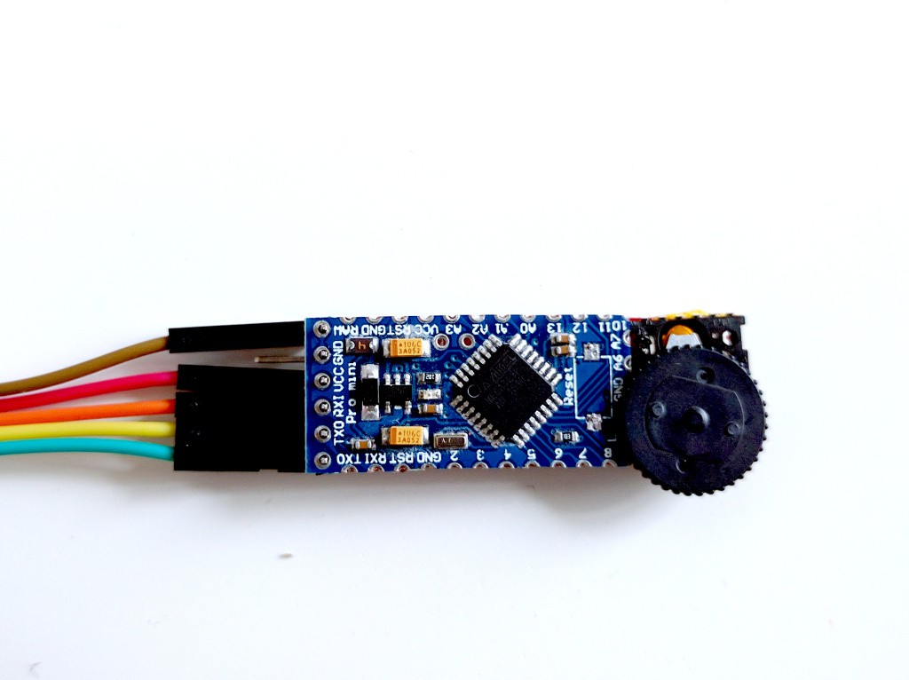

First Mock of the Interface¶
Published on 2016-04-15 in Nano TTY.
Now that I have all the parts, it’s time to put this thing together. I had some Arduino Pro Mini that I tried to modify into a “postal stamp” castellated module, by cutting its edges. That didn’t work very well, and it went to my junk box. Today I fished it out from there, removed the LED and reset button, cut off that part entirely, and glued to the back of the OLED module. The encoder got glued next to it, through some kapton tape, to not short the OLED module’s pins. A pin header on the ftdi port of the arduino and that’s it… at least mechanically.
I’m not very proud of doing this to the poor Pro Mini, but hey, recycling!
Next I got the code for scrolling and for encoder together, and made this quick mockup of how it’s supposed to work when it’s ready:
It looks like it’s working, but don’t be fooled. It’s only scrolling one way, and pausing to wait for the encoder. No real buffer scrolling yet, that has to be implemented. But it’s a start, and it’s actually quite convenient.